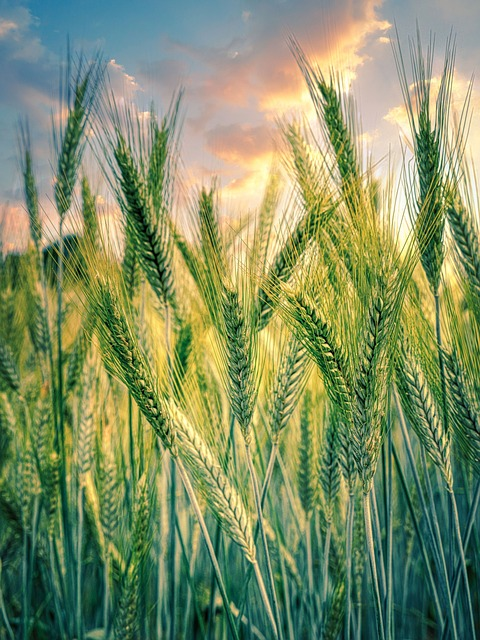

Why Choose Us
AgroTasker combines agriculture expertise with Modern Technology to deliver smart , practical solutions.
AgroTasker is built with a deep understanding of both technology and agriculture. We don't just create apps we create smart solutions tailored specifically for the needs of modern farmers, agribusinesses, and agricultural organizations. Our team combines industry expertise with cutting-edge tech to help you save time, boost productivity, and grow your business sustainably.
Agriculture-Focused Expertise
We specialize in creating digital solutions tailored specifically for farmers, agribusinesses, and agricultural communities.
Smart and Practical Technology
Our web and app developments are designed to be simple, effective, and impactful making your work easier and your growth faster.
Reliable Support and Innovation
We're committed to helping you succeed with continuous improvements, dedicated support, and the latest in AgriTech innovation.